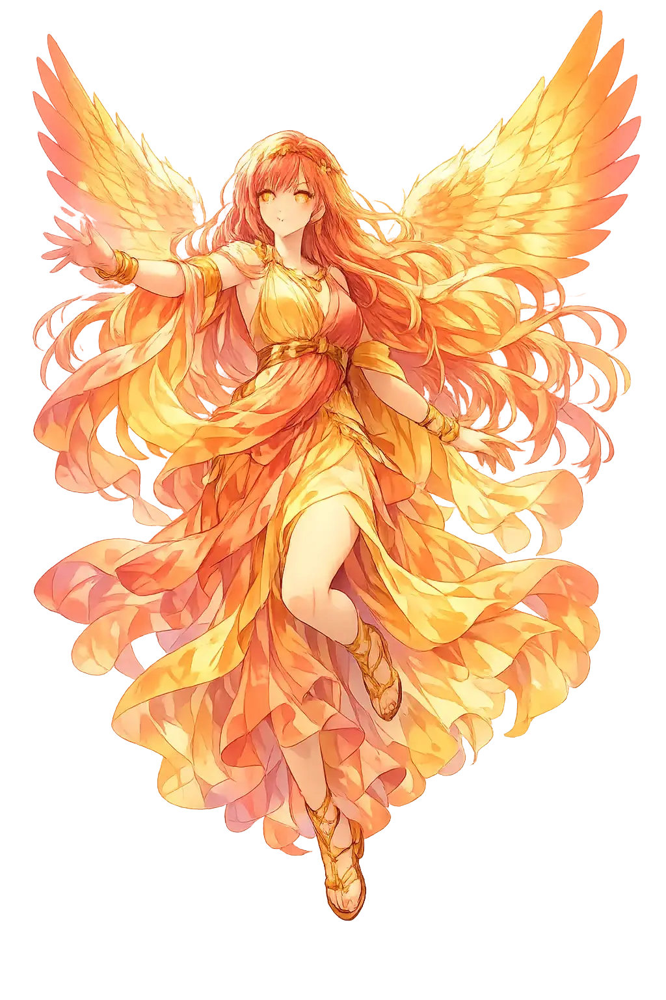
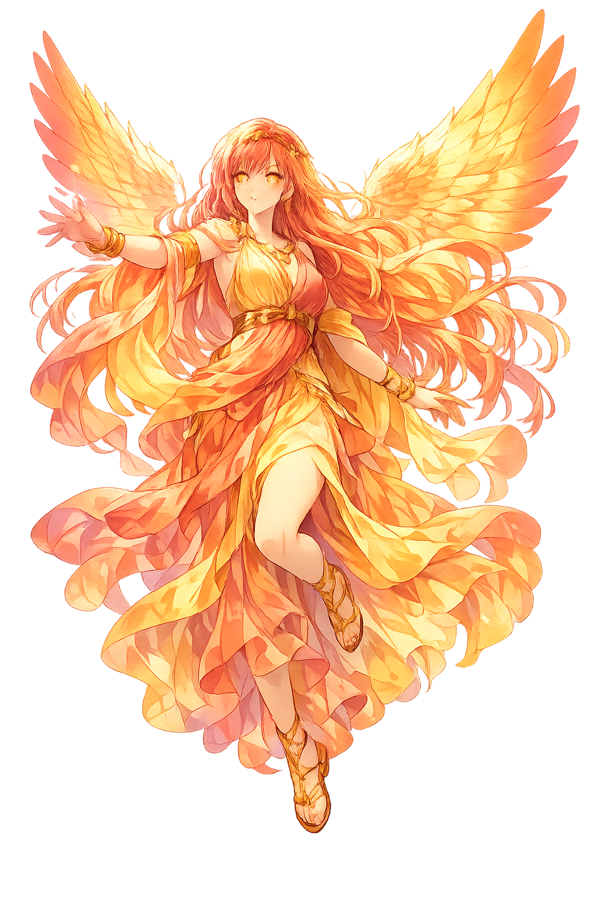

Unicode restoration and ASCII comparison
Ἠώς
The name in its original Greek form. Ēōs (Ἠώς) is attested in the source tradition — “Dawn (from ἠώς)”. Its long vowels and acute accents carry the full phonetic and orthographic weight of the source tradition.
eos
Reduced to plain eos, the name loses everything that made it specific: long vowels and acute accents. What remains is an ASCII string that machines can parse but that no longer speaks with its original voice.
Ēōs
The Unicode restoration recovers what ASCII flattened. Ēōs restores long vowels and acute accents, returning the name to its original written dignity. The domain encodes to Punycode, but the browser displays the truth.
Ēōs.com → xn--s-oia8o.com
The non-ASCII characters in Ēōs are encoded while the ASCII remains visible. To the DNS, it is Punycode. To humanity, it is Ēōs.
How Ēōs is preserved in writing
A bespoke provenance study for Ēōs is being prepared by the PUNICODEX scholarly team.
Contribute scholarly provenance →How Ēōs was spoken
Dawn, Morning Light, New Beginnings
Ēōs is the goddess of dawn, daughter of Hyperion and Theía, sister of Hēlios and Selēnē. Each morning she rises from the sea in a saffron robe and opens the gates of day, scattering light across the world.
She opens the gates of heaven so Hēlios can ride his chariot across the sky.
The Homeric epithet rhododáktylos describes the red light of early morning touching the world.
She abducted Tithonos, Kephalos, and Orion, loving mortals whose fates ended in grief.
She wears the golden-red robe of morning light across sea and mountain.
Stories of Ēōs
Ēōs is beautiful and inconsolable. Her myths turn on love for mortals and the tragedy of asking the gods for the wrong gift.
Ēōs loved the Trojan prince Tithonos and asked Zeus to grant him immortality. She forgot to ask for eternal youth. Tithonos aged endlessly, shrinking until he became a cicada, whose chirping is the sound of immortal old age. The myth is a meditation on the limits of divine gifts.
Ēōs abducted the handsome hunter Kephalos and bore him a son, Phaethon. In some versions she later restores him to his wife Prokris, but the damage is done: suspicion and a tragic hunting accident destroy the marriage.
Homer opens many books with the formula 'Dawn appeared, rosy-fingered.' Ēōs is the daily return of possibility: every battle, every journey, every reconciliation begins with her light. Her presence is so regular it becomes sacred.
Ēōs is persistence. She returns every morning whether we are ready or not. In that regularity there is mercy: no night is final, no darkness permanent. Yet she also carries the memory of Tithonos, the beloved who could not die and could not be young. Her dawn is therefore bittersweet.
Enter Extended Lore